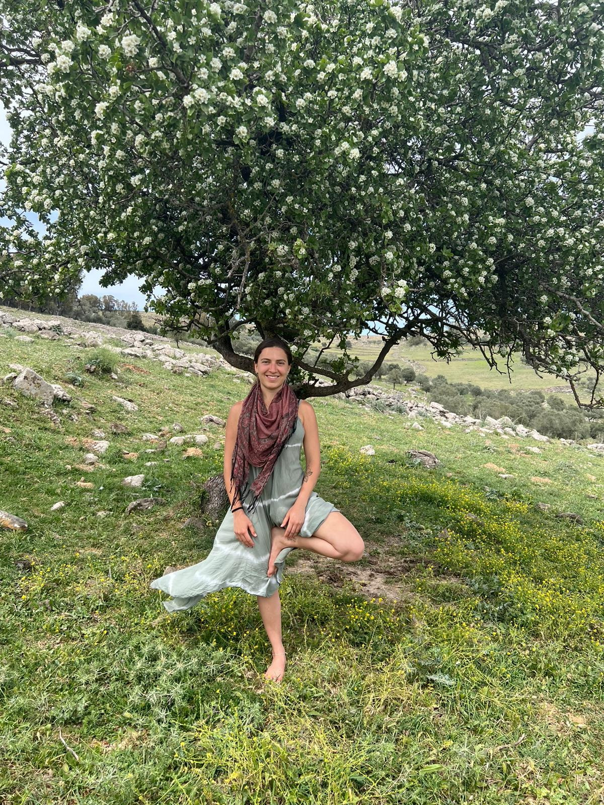

היוגה שלי
משנה אותי
משתנה איתי
מלמדת אותי להתבונן
צעד אחר צעד אני פוסעת בשביל פרי יצירתי
מתרגול לתרגול אני משחררת אנרגיה תקועה
מרחיבה תודעה
מעמיקה נשימה
זוכה לעוד בהירות
לפחות מהירות
לחדוות החיים
היוגה שלי
משנה אותי
משתנה איתי
מגלה לי את המציאות כפי שהיא
